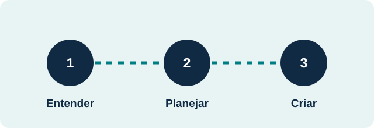

Sites
Apresente seus serviços com clareza em páginas rápidas e adaptadas ao celular.
Tecnologia com propósito
Criamos experiências web e organizamos processos digitais para pequenas empresas. Começamos pelo seu desafio e desenhamos uma solução que faça sentido para sua rotina.
O que fazemos
Apresente seus serviços com clareza em páginas rápidas e adaptadas ao celular.
Organize tarefas recorrentes e libere tempo para atender melhor.
Reúna informações e acompanhe processos em ferramentas feitas para sua operação.
Como começar

Conte o que acontece hoje e o que gostaria de melhorar.
Veja exemplos de soluções e identifique o que combina com seu contexto.
Defina prioridades, informações necessárias e um escopo inicial.
Nosso catálogo reúne 15 exemplos ilustrativos para diferentes tipos de pequenos negócios.
Explorar soluções